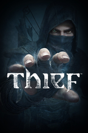

|  | |
| Tiempo de juego | No Jugado |
| Última actividad | Nunca |
| Añadido | 11/6/2024 15:27:56 |
| Modificado | 11/17/2024 14:39:09 |
| Estado de finalización | No Jugado |
| Librería | Playnite |
| Fuente | 1 TB 1 |
| Plataforma | PC (Windows) |
| Fecha de lanzamiento | 2/27/2014 |
| Puntuación de la Comunidad | 73 |
| Puntuación de la Crítica | 70 |
| Puntuación de usuario | |
| Género | Acción Aventura |
| Desarrollador | Eidos-Montréal Feral Interactive (Mac) |
| Editor | Eidos Interactive Corp. Feral Interactive (Mac) |
| Característica | Cloud Saves Compat. Total Con Mando Cromos De Logros De Préstamo Familiar Remote Play En TV Tablas De Clasificación De Un Jugador |
| Enlaces | Punto de encuentro Discusiones Guías Noticias Página de la tienda PCGamingWiki Logros |
| Tag | Acción Ambientales Asesinos Aventura Desnudos Fantasía FPS Medievales Mundo abierto Oscuros Parkour Primera persona Reinicio Robos Rol Sigilo Steampunk Terror Un jugador Versiones nuevas |